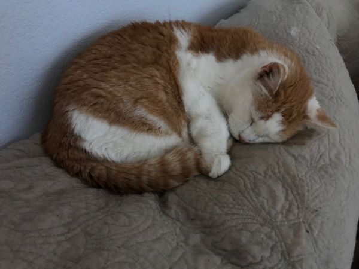

My mom died suddenly in November of 2017. I am honored and privileged to have inherited what she treasured the most at that time in her life, her cat Scout. I will often refer to him as my "little brother" since he was my mother's child. Scout was an adult cat when he presented himself on her doorstep so we don't know how old he is but he is getting up there in age.
/